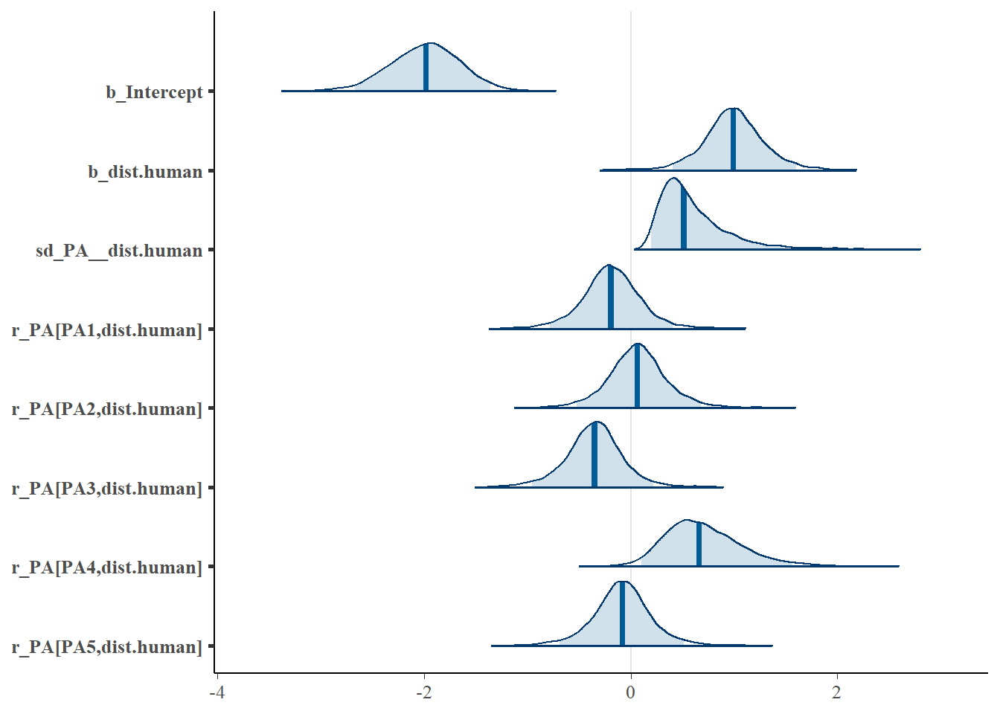
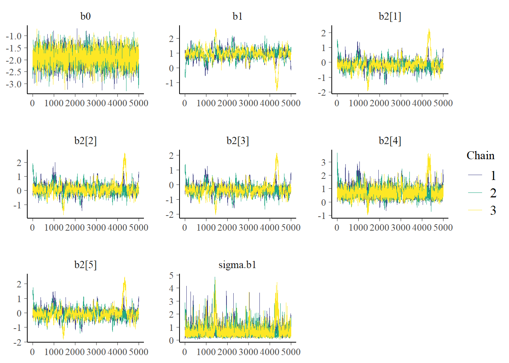
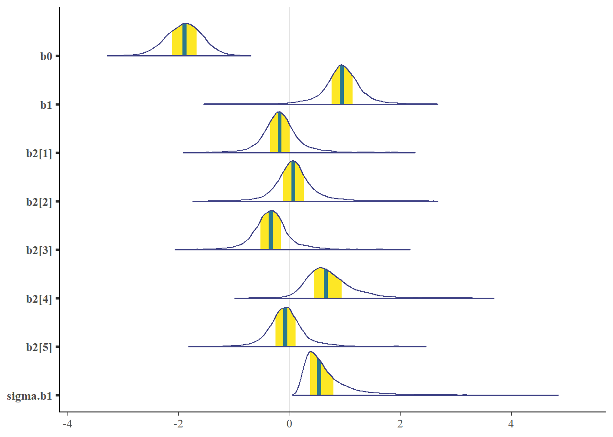
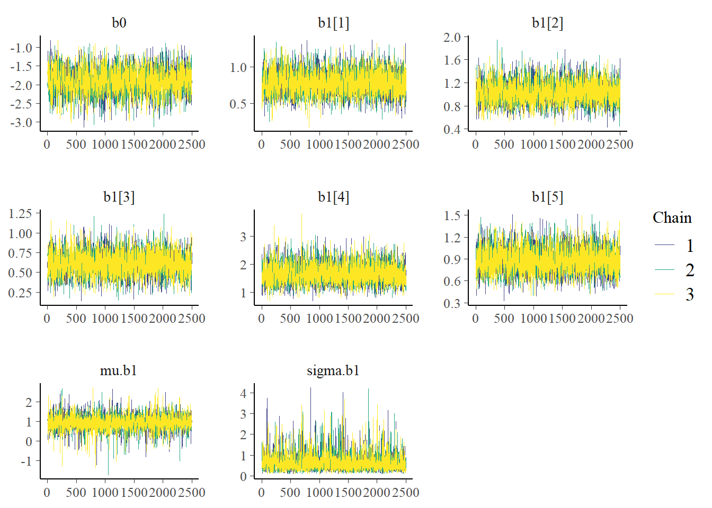
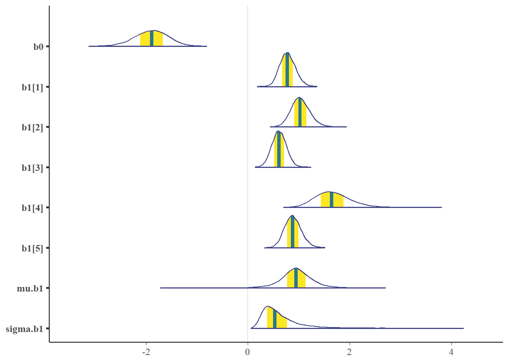
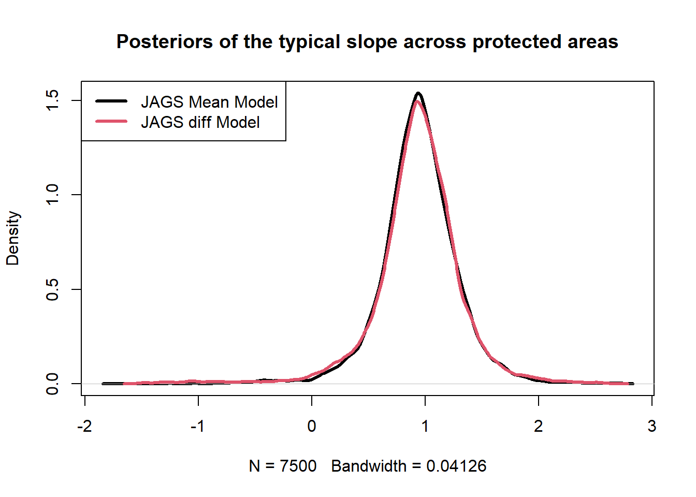
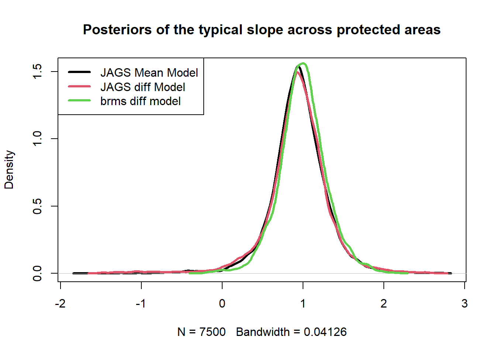

Hierarchical Bayesian GLM Assignment
Objective
Submit a markdown report that describes the model and results for the model with a fixed intercept and random slopes for dist.human by protected area. The report should inlcude,
- statistical notation and JAGS syntax notation
- traceplots with text visually assessing posterior convergence.
- plots showing the posterior distributions (histograms or density plots) for each parameter.
- a table of estimates of the difference between the slope for each protected area and the overall mean slope across protected areas; include a point estimate (mean/median/mode) and measures of uncertainty, e.g., Bayesian credible intervals, for each.
Background
This is not real data. However, the basic premise has been adopted from the paper, Getting the big picture: Landscape-scale occupancy patterns of two Annamite endemics among multiple protected areas.
Overview
The Annamite striped rabbit is a forest-dwelling lagomorph that was discovered by science in the mid-1990s. Little is known about this species. What has been done indicates that hunting pressure is a primary driver of its distribution. As such, protected areas are paramount to their conservation. However, protected areas vary in their effectiveness in limiting hunting and some protected areas are founded on multi-use, such that hunting is still allowed.

A camera trap study was conducted in the Annamite mountain range of Vietnam to better understand the distribution of the unique mammal fauna. A central focus was to learn about the effects of anthropogenic activity on the distribution of the Annamite striped rabbit. A total of 50 camera traps were deployed at 5 different protected areas. The cameras were placed systematically with a random starting point to capture variation in the Euclidean distance between a camera and the nearest center of human activity (i.e., village/town). A colleague organized the data, such that for each camera site, the presence (1) or assumed absence (0) of the rabbit was recorded (occur); we will assume there are no false-positives or false-negatives in these data. The main variables of interest are the protected areas (PA) and the distance to human activity (dist.human) in meters.
Working with your colleagues, they outline their hypothesis that the main driver of rabbit occurrence is hunting within the protected areas. However, there is no spatial variable or direct measure of hunting pressure throughout the park. Rather, they predict that increasing distance away from human activity will lead to higher rabbit occupancy because people will only travel so far in difficult mountainous terrain. They also hypothesize that this effect will vary by protected area because there is different levels of patrolling and enforcement. But, regardless of protected area, they hypothesize that occurrence at the edge of the protected areas nearest to human activity will be the same because of the similar density of people and that occurrence will be very low.
Model Notation (effect difference)
We fit a model to our data, where the occurence of the species (\(y_{i,j}\)) for site \(i\) in projected area \(j\) is modeled as,
\[\begin{align*} y_{i,j}\sim& \text{Bernoulli}(p_{i,j})\\ \text{logit}(p_{i,j}) &= \alpha_{0} + (\beta_1 + \beta_{2,j}) \times \text{dist.human}_{i,j}\\ \beta_{2,j} &\sim \text{Normal}(0, \sigma^{\beta}) \end{align*}\]
\[\begin{align*} \alpha_{0} \sim& \text{Logistic}(0, 1)\\ \beta_{1} \sim& \text{Normal}(0, 3)\\ \sigma^{\beta} \sim& \text{Uniform}(0, 5)\\ \end{align*}\]
JAGS Syntax (effect difference)
model {
# Priors
b0 ~ dlogis(0,1)
b1 ~ dlogis(0,1)
sigma.b1 ~ dunif(0,5)
tau.b1 <- 1/sigma.b1^2
# Likelihood
for (i in 1:N) {
y[i] ~ dbern(p[i])
logit(p[i]) <- b0 + (b1 + b2[PA[i]])*dist.human[i]
} #End loop
# Random Slope
for(j in 1:N.PA){
b2[j] ~ dnorm(0,tau.b1)
} #End loop
} #End ModelModel Fitting in brms (effect difference)
If we want to look at the stan model code and priors, we would do this (not printed):
# See underlying model
brm.fit$model
# See default priors
get_prior(brm.fit)Visually Examine the traceplots
Let’s get our estimates
# Note: The b_Intercept parameter is this mean-centered intercept back-transformed to the original scale of the predictors. Thus, "intercept' can be ignored
brm.fit$fitInference for Stan model: anon_model.
3 chains, each with iter=5000; warmup=1000; thin=1;
post-warmup draws per chain=4000, total post-warmup draws=12000.
mean se_mean sd 2.5% 25% 50% 75%
b_Intercept -1.99 0.00 0.34 -2.67 -2.21 -1.98 -1.76
b_dist.human 1.00 0.01 0.29 0.41 0.82 0.99 1.17
sd_PA__dist.human 0.60 0.01 0.34 0.20 0.37 0.51 0.74
Intercept 0.55 0.02 0.69 -0.91 0.17 0.55 0.93
r_PA[PA1,dist.human] -0.19 0.01 0.29 -0.78 -0.36 -0.19 -0.02
r_PA[PA2,dist.human] 0.07 0.01 0.29 -0.52 -0.11 0.06 0.23
r_PA[PA3,dist.human] -0.35 0.01 0.28 -0.96 -0.52 -0.35 -0.19
r_PA[PA4,dist.human] 0.71 0.01 0.37 0.10 0.44 0.66 0.92
r_PA[PA5,dist.human] -0.08 0.01 0.29 -0.68 -0.25 -0.08 0.08
prior_Intercept 0.01 0.04 4.16 -7.88 -1.89 0.01 1.93
prior_sd_PA 2.76 0.03 3.15 0.09 0.86 1.91 3.57
lprior -3.27 0.00 0.14 -3.67 -3.30 -3.22 -3.18
lp__ -137.34 0.06 2.65 -143.56 -138.88 -137.01 -135.44
97.5% n_eff Rhat
b_Intercept -1.36 13430 1
b_dist.human 1.60 2111 1
sd_PA__dist.human 1.49 1487 1
Intercept 1.98 1935 1
r_PA[PA1,dist.human] 0.40 2148 1
r_PA[PA2,dist.human] 0.68 2195 1
r_PA[PA3,dist.human] 0.22 2105 1
r_PA[PA4,dist.human] 1.56 2886 1
r_PA[PA5,dist.human] 0.52 2148 1
prior_Intercept 7.80 11833 1
prior_sd_PA 10.75 12289 1
lprior -3.15 1796 1
lp__ -133.19 1845 1
Samples were drawn using NUTS(diag_e) at Thu Aug 29 14:45:49 2024.
For each parameter, n_eff is a crude measure of effective sample size,
and Rhat is the potential scale reduction factor on split chains (at
convergence, Rhat=1). summary(brm.fit) Family: bernoulli
Links: mu = logit
Formula: occur ~ 1 + dist.human + (0 + dist.human | PA)
Data: dat (Number of observations: 250)
Draws: 3 chains, each with iter = 5000; warmup = 1000; thin = 1;
total post-warmup draws = 12000
Multilevel Hyperparameters:
~PA (Number of levels: 5)
Estimate Est.Error l-95% CI u-95% CI Rhat Bulk_ESS Tail_ESS
sd(dist.human) 0.60 0.34 0.20 1.49 1.00 1649 2219
Regression Coefficients:
Estimate Est.Error l-95% CI u-95% CI Rhat Bulk_ESS Tail_ESS
Intercept -1.99 0.34 -2.67 -1.36 1.00 13458 8018
dist.human 1.00 0.29 0.41 1.60 1.00 2214 2399
Draws were sampled using sampling(NUTS). For each parameter, Bulk_ESS
and Tail_ESS are effective sample size measures, and Rhat is the potential
scale reduction factor on split chains (at convergence, Rhat = 1).Note that the Gelman-Rubin diagnostics (Rhat) are all near 1 indicating posterior convergence by assessing variation across chains.
Extract the ‘random effects’ or the effect differences from the typical slope across protected areas for distance to human covariate.
|
Extract the ‘fixed effects’ or the the typical slope across protected areas for distance to human covariate and the intercept, which does not vary by protected area.
| Estimate | Est.Error | Q2.5 | Q97.5 | |
|---|---|---|---|---|
| Intercept | -1.989259 | 0.3354348 | -2.6680092 | -1.357761 |
| dist.human | 0.995826 | 0.2945634 | 0.4051408 | 1.602731 |
Get the posterior distributions of interest
mcmc_areas(as.matrix(brm.fit),
pars = names(brm.fit$fit)[c(1:3,5:9)],
prob = 0.95)
Model Fitting in JAGS (effect difference)
Here, we will use the logistic prior, which is not the same as used by stan. Let’s visualize it,
# Setup the Model
jm = jags.model(file="model.jags.version2.r",
data = data,
n.chains = n.chains,
n.adapt = n.adapt
)
# Update the model with the burnin
update(jm, n.iter=burn)
# Fit the modedl
post=coda.samples(jm,
variable.names = parms,
n.iter = n.iter,
thin = thin
)Lets visually assess convergence
# Look at chains
# Plot all chains MCMC iterations
color_scheme_set("viridis")
mcmc_trace(post)
Let’s calculate the gelman-rubin diagnostic (Rhat) to test convergence across chains:
coda::gelman.diag(post)Potential scale reduction factors:
Point est. Upper C.I.
b0 1.00 1.01
b1 1.07 1.13
b2[1] 1.06 1.12
b2[2] 1.06 1.11
b2[3] 1.07 1.12
b2[4] 1.05 1.08
b2[5] 1.07 1.11
sigma.b1 1.03 1.05
Multivariate psrf
1.02Notice that the point estimates and credible intervals are higher than we would like them to be. How would we fix this? I’ll push on using these results, but generally we need to do something about these values which are greater than we would like, which is <1.1.
Let’s visualize our posterior distributions:
# Fancy plot of posterior
mcmc_areas(as.matrix(post))
b0 b1 b2[1] b2[2] b2[3] b2[4]
-1.89742551 0.93299913 -0.15392711 0.09657060 -0.31978318 0.73385261
b2[5] sigma.b1
-0.04904372 0.66814857 b0 b1 b2[1] b2[2] b2[3] b2[4]
-1.88982586 0.94769910 -0.17743587 0.06856035 -0.33724185 0.65637928
b2[5] sigma.b1
-0.07247359 0.53550640 b0 b1 b2[1] b2[2] b2[3] b2[4]
2.5% -2.556115 0.1012625 -0.8687304 -0.61341742 -1.0304273 0.05407102
50% -1.889826 0.9476991 -0.1774359 0.06856035 -0.3372418 0.65637928
97.5% -1.272054 1.6608578 0.6986935 0.99504278 0.5246013 1.88413212
b2[5] sigma.b1
2.5% -0.75364545 0.2021704
50% -0.07247359 0.5355064
97.5% 0.82594040 2.0113906Compare these fixed effects of brms with JAGS estimates:
| 2.5% | 50% | 97.5% | |
|---|---|---|---|
| b0 | -2.5561149 | -1.8898259 | -1.272054 |
| b1 | 0.1012625 | 0.9476991 | 1.660858 |
| Estimate | Est.Error | Q2.5 | Q97.5 | |
|---|---|---|---|---|
| Intercept | -1.989259 | 0.3354348 | -2.6680092 | -1.357761 |
| dist.human | 0.995826 | 0.2945634 | 0.4051408 | 1.602731 |
Compare the ‘random effects’ of brms with JAGS estimates:
| 2.5% | 50% | 97.5% | |
|---|---|---|---|
| b2[1] | -0.8687304 | -0.1774359 | 0.6986935 |
| b2[2] | -0.6134174 | 0.0685604 | 0.9950428 |
| b2[3] | -1.0304273 | -0.3372418 | 0.5246013 |
| b2[4] | 0.0540710 | 0.6563793 | 1.8841321 |
| b2[5] | -0.7536455 | -0.0724736 | 0.8259404 |
|
Model Fitting in JAGS (mean parameterization)
Another way we could fit the same model would be with a slightly different parameterization.
Model Notation (mean parameterization)
We fit a model to our data, where the occurence of the species (\(y_{i,j}\)) for site \(i\) in projected area \(j\) is modeled as,
\[\begin{align*} y_{i,j}\sim& \text{Bernoulli}(p_{i,j})\\ \text{logit}(p_{i,j}) &= \alpha_{0} + \beta_{j}\times \text{dist.human}_{i,j}\\ \beta_{j} &\sim \text{Normal}(\mu^{\beta}, \sigma^{\beta}) \end{align*}\]
\[\begin{align*} \alpha_{0} \sim& \text{Logistic}(0, 1)\\ \mu^{\beta} \sim& \text{Logistic}(0, 1)\\ \sigma^{\beta} \sim& \text{Uniform}(0, 5)\\ \end{align*}\]
JAGS Syntax (mean parameterization)
# Priors
b0 ~ dlogis(0,1)
mu.b1 ~ dnorm(0, 3)
sigma.b1 ~ dunif(0,5)
tau.b1 <- 1/sigma.b1^2
# Likelihood
for (i in 1:N) {
y[i] ~ dbern(p[i])
logit(p[i]) <- b0 + b1[PA[i]]*dist.human[i]
} #End loop
# Random Slope
for(j in 1:N.PA){
b1[j] ~ dnorm(mu.b1,tau.b1)
} #End loop
} #End ModelModel Fitting in JAGS (mean parameterization)
# JAGS data list
data = list(
y = dat$occur,
N = length(dat$occur),
dist.human = dat$dist.human,
PA = sub('..', '', dat$PA),
N.PA = length(unique(dat$PA))
)
# MCMC inputs
n.chains=3
n.adapt=1000
n.iter=5000
thin=2
burn=1000
# Model Parameters to save values of
parms = c("b0","b1","mu.b1","sigma.b1") Reminder, we are not using the same priors as in brms.
# Setup the Model
jm = jags.model(file="model.jags.version1.r",
data = data,
n.chains = n.chains,
n.adapt = n.adapt
)
# Update the model with the burnin
update(jm, n.iter=burn)
# Fit the modedl
post=coda.samples(jm,
variable.names = parms,
n.iter = n.iter,
thin = thin
)Lets visually assess convergence
# Look at chains
# Plot all chains MCMC iterations
color_scheme_set("viridis")
mcmc_trace(post)
Let’s calculate the gelman-rubin diagnostic (Rhat) to test convergence across chains:
coda::gelman.diag(post)Potential scale reduction factors:
Point est. Upper C.I.
b0 1 1.00
b1[1] 1 1.00
b1[2] 1 1.00
b1[3] 1 1.00
b1[4] 1 1.00
b1[5] 1 1.01
mu.b1 1 1.00
sigma.b1 1 1.00
Multivariate psrf
1How do the values look? Would you trust this model?
Let’s visualize our posterior distributions:
# Fancy plot of posterior
mcmc_areas(as.matrix(post))
b0 b1[1] b1[2] b1[3] b1[4] b1[5] mu.b1
-1.8992913 0.7811173 1.0331181 0.6138219 1.6701305 0.8856813 0.9446178
sigma.b1
0.6396150 b0 b1[1] b1[2] b1[3] b1[4] b1[5] mu.b1
-1.8879744 0.7754007 1.0233006 0.6117856 1.6439524 0.8799517 0.9451298
sigma.b1
0.5290563 b0 b1[1] b1[2] b1[3] b1[4] b1[5] mu.b1
2.5% -2.565455 0.5022699 0.6992399 0.3418564 1.082879 0.5793853 0.2286047
50% -1.887974 0.7754007 1.0233006 0.6117856 1.643952 0.8799517 0.9451298
97.5% -1.283840 1.0969131 1.4137960 0.8909246 2.414385 1.2237817 1.6299030
sigma.b1
2.5% 0.1961656
50% 0.5290563
97.5% 1.7918687Let’s plot the posterior distribution of the typical slope for dist.human from this model and compare it to the one from JAGS using the effect difference parameterization.

Let’s add in the same slope from brms .. .
